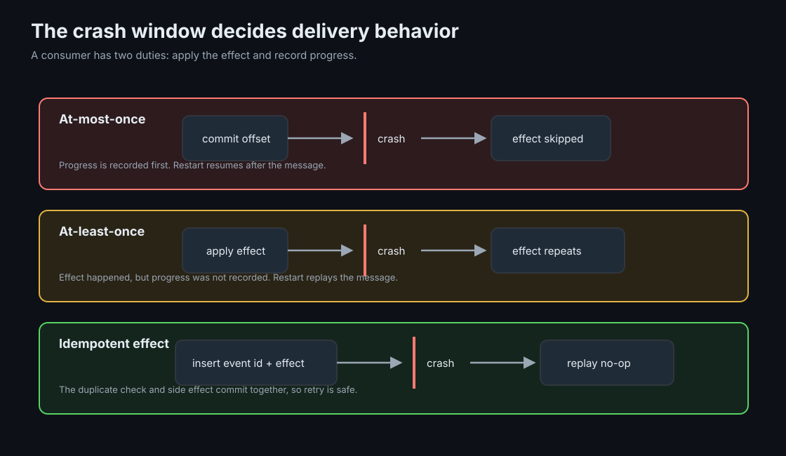
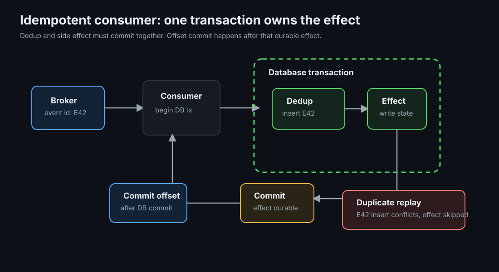

Delivery Semantics: Why Exactly-Once Is Something You Build
Message systems can retry, persist, and order work, but the final business effect is correct only when the producer, broker, consumer, and side-effect store agree on failure behavior.
TLDR
- End-to-end semantics depend on every hop: producer ack settings, broker durability, offset commits, and external side effects all participate.
- The crash window is the main trade-off: record progress before work and you can lose work; do work before recording progress and you can duplicate work.
- At-least-once plus idempotent processing is the default: accept redelivery, then make repeated effects harmless.
- Kafka EOS has a boundary: it is strong inside Kafka, especially consume-transform-produce flows, but it does not make an external database or API call transactional with Kafka.
Mental Model
A consumer loop has two obligations for each message: apply the effect and move the bookmark. A crash can land between them. The order you choose decides whether restart skips work, repeats work, or repeats work safely because the effect is idempotent.

The broker can reduce failure windows, but it cannot remove the one between an external effect and the offset that says the message is done. That boundary belongs to application design.
Ground-Up Explanation
Producer to broker
A producer that times out waiting for an acknowledgement cannot know whether the broker missed the message or the acknowledgement was lost. Retrying is therefore required for durability, and retries imply duplicates unless the broker can recognize a repeated send. Kafka's idempotent producer uses producer identity, epoch, and per-partition sequence numbers to dedupe producer retries within a session.
Ack settings define the producer-side promise. acks=0 means no broker promise. acks=1 means the leader wrote locally. acks=all, with enough in-sync replicas, means the record reached the configured replication threshold. A weak producer guarantee can lose a record before consumers even start.
Broker to consumer
The consumer side is about offset timing. Commit before processing gives at-most-once behavior: the message may be skipped after a crash. Commit after processing gives at-least-once behavior: the message may be replayed after a crash. Automatic commits are convenient but make the timing less explicit; manual commits force the application to choose where progress becomes durable.
auto.offset.reset only applies when no committed offset exists. It is not a recovery policy for normal crashes. The normal recovery point is whatever offset was last committed to the broker's offset store.
Concept Deep Dive
Idempotency strategy catalog
| Strategy | How it works | When it fits |
|---|---|---|
| Natural idempotency | Use operations where repeating the same command has the same final state, such as setting a status or using an upsert. | State transitions that can be expressed as assignment, not accumulation. |
| Dedup table | Insert a unique event id and apply the side effect in the same database transaction. | Most durable consumers that write to a relational store. |
| Conditional write | Apply only if version, state, or sequence number matches the expected previous value. | Workflows with explicit state machines or monotonic versions. |
| API idempotency key | Caller supplies a stable key; server stores request outcome and returns the same result for retries. | External request boundaries where clients retry after ambiguous failures. |
The dedup-table rule depends on one detail: the duplicate check and the side effect must commit in the same transaction. Checking one store and mutating another recreates the same crash window one layer down.

Ordering and dedup interact
Ordering is usually per key, not global. A version guard works well when every event for one entity is processed in order. Out-of-order redelivery complicates that guard: an old event can arrive after a newer one, and a naive "not seen before" check may apply stale work. For ordered workflows, include per-entity sequence numbers or expected-state guards so duplicates and stale messages are separate cases.
Kafka transactions and EOS boundary
Kafka transactions can atomically write output records and commit consumed offsets. That makes consume-transform-produce pipelines exactly-once inside Kafka: either the transformed output and offset commit become visible together, or neither does. The boundary is any external side effect. A database row, email, payment-provider call, or HTTP mutation is not part of the Kafka transaction unless you add a separate idempotency or reconciliation mechanism.
Dedup retention and scope
Dedup state needs an explicit retention policy. It should cover the maximum replay horizon: broker retention, backup restore windows, manual replay habits, and connector retries. Scope the key to the effect. A globally unique event id is simple; (consumer_name, event_id) is safer when multiple consumers need to apply different effects from the same event.
Implementation Details
- Choose the failure you prefer: at-most-once loses work, at-least-once duplicates work, idempotent at-least-once duplicates messages but not effects.
- Generate stable ids at the source: a retry that creates a new id cannot be deduped downstream.
- Commit offsets after durable effect: pair this with idempotency so replay is safe.
- Keep dedup and effect together: same database transaction, same conditional write, or same server-side idempotency record.
- Design for replay: old messages should be safe to reprocess during recovery, backfills, and manual audits.
- Reconcile anyway: idempotency handles retry ambiguity; reconciliation catches bugs, operator mistakes, and missing external callbacks.
Lab Evidence
The runnable lab is labs/kafka/delivery: 1,000 payment events, each crediting 100 cents, applied to a Postgres balance by a consumer that hard-crashes (os.Exit, no cleanup) after event 500. The verify step compares the balance to the exact expected 100,000 cents.
make break
at-least-once: apply, crash, replay. Verify reports an overshoot and exits 1.
make lose
at-most-once: commit, crash, skip. Verify reports a shortfall and exits 1.
make test
idempotent: same crash, dedupe insert in the credit's transaction. Verify is exact, exit 0.
Measured: the same crash, three balances
From real runs on 2026-07-07 (1,000 events, crash near event 500, offsets batch-committed every 100 messages):
at-least-once: applied=600 after restart (100 replayed)
balance=110000, expected=100000 => overshoot 10000. exit 1
at-most-once: CRASH after committing offset for pay-499, before applying it
balance= 99900, expected=100000 => shortfall 100. exit 1
idempotent: applied=500 skipped-as-duplicate=100
balance=100000, expected=100000 => exact. exit 0The overshoot matches the replay window: the last batch commit covered event 400, so 100 events replayed. The idempotent consumer replayed the same 100 and skipped them inside the credit's own transaction.
Production Notes
- At-most-once has valid uses: metrics, telemetry, ephemeral notifications, and any workflow where a loss is cheaper than a duplicate.
- Use per-key partitioning when order matters for one entity; use more keys and partitions when throughput matters more than cross-key ordering.
- Document the replay horizon that dedup state supports. It should match retention and operational recovery practices, not a random cleanup job.
- External providers often have their own idempotency and reconciliation model. Treat provider keys and internal event ids as related but separate contracts.
Code Pointers
| Code | Why it matters |
|---|---|
cmd/delivery/main.go | All three semantics differ only in the placement of CommitMessages and one dedupe insert; see consume and apply. |
migrations/001_ledger.sql | The dedupe table: a primary key doing distributed-systems work. |
Further Reading & Watching
- You Cannot Have Exactly-Once Delivery by Tyler Treat. The impossibility argument in three pages.
- Exactly-Once Semantics Are Possible: Here's How Kafka Does It by Neha Narkhede. What EOS covers, precisely.
- Designing robust and predictable APIs with idempotency by Stripe. The same pattern at the API boundary, from the company that made it famous.
- Making retries safe with idempotent APIs by AWS Builders' Library.
- Idempotence Is Not a Medical Condition by Pat Helland, ACM Queue. The classic on messaging reality in large systems.
- Pattern: Idempotent consumer by Chris Richardson.
- Book: Martin Kleppmann, Designing Data-Intensive Applications, ch. 11, for a careful treatment of exactly-once semantics.